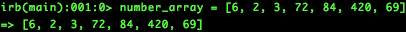
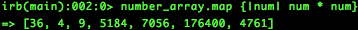
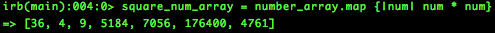
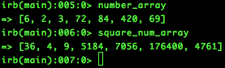

About The Author: Mike London can usually be found on TwitchTv watching Dota 2. @mikelawndawn #AllianceIsBack #kappaRoss
Enumerable Methods
Today's Date: Sunday, January 31, 2016
Today we are going to talk about The Enumerable module and more importantly the Map method within the enumerable module. This post is geared toward the extreme Ruby beginner. If you are extremely comfortable with iterating over arrays and other collection structures then this post may same tedious or boring.
Anyways, onto the Map Enumerator!
In the Ruby language we, the user, are able to access collections or containers of information through the use of Arrays, Hashes, and Ranges. If you want to read my very basic introduction to Arrays and Hashes you can access that here.
Say we had an Array equal to the integers, [6, 2, 3, 72, 84, 420, 69] and we wanted to access the integers and create a new array equal to the square of each integer. How would we go along with that? Well, we can use Enumerators to easily iterate over a chosen array, and create a new array from it.
To get a better grasp of what Enumerators are we will take a look at David A. Blacks, The Well Grounded Rubyist definition for Enumerators. 'Enumerators are objects that encapsulate knowledge of how to iterate through a particular collection. By packaging iteration intelligence in an object thats separate from the collection itself, enumerators add a further and powerful dimension to Rubys already considerable collection-manipulation facilities.' Enumerators are a powerful tool to access and manipulate within data structures in Ruby.
Before going into the Exercise open up a Terminal Prompt and type irb to access the Interactive Ruby Prompt.
For this exercise we want to take the array [6, 2, 3, 72, 84, 420, 69], then square of each element, and finally return those values to a new array.
Lets set the array equal to a variable called, number_array. Type this into irb:
number_array = [6, 2, 3, 72, 84, 420, 69]

Notice that after entering the code in irb the arrays elements are returned in the line below.
When calling an enumerator we could call it directly on the array itself, however we will call it on the number_array variable instead so it will be easier to read. For this next step, lets use the map enumerator to take our square of the Integer Array. This will be typed out as follows
number_array.map {|num| num * num}
This should out put the following.

When using an enumerator, we are iterating over the collection structure we supply. In this case the curly braces notation notes that we are supplying a new variable for each iteration in this case the num encompassed by the pipes. After we have set our iteration variable, we can then execute our block of code in this case the num multiplied by num or num squared.
We can now clean up our code by introducing a second variable to hold the 'mapped array'. We will set the variable: square_num_array equal to the number_array.map result. This is what should out put when we reference the variable.

We have just assigned the variable square_num to a value lets check if it works now. We will call both of the number_array and square_num_array and check their values.

Great! as you can see, our two variables work and output the values we expect. I hope this was a quick and simple tutorial on how to use the Map Enumerator when accessing elements in an Array.